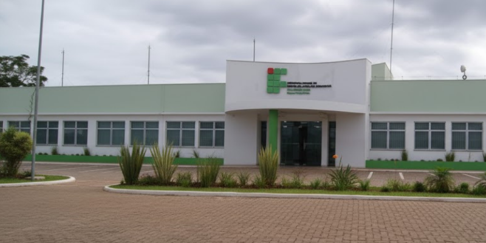
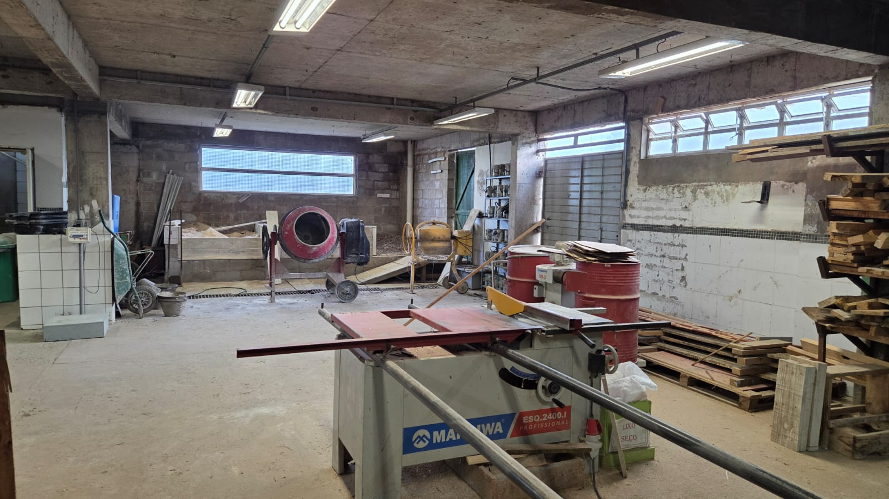
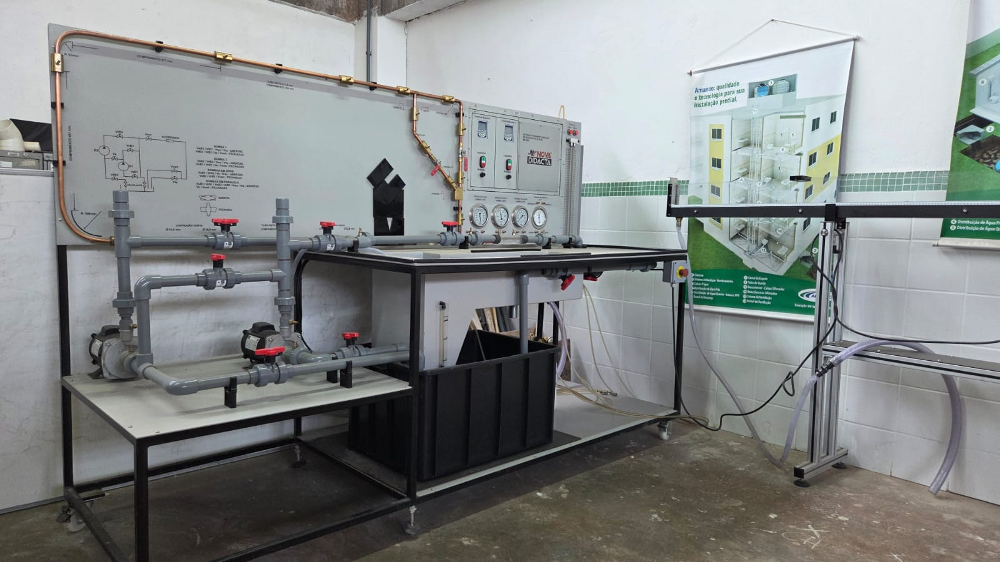

Instituto Federal Sul-rio-grandense
- IFSul Câmpus Passo Fundo
Contato
- Est. Perimetral Leste, 150. Passo Fundo - RS
- rodrigobordignon@ifsul.edu.br
- Coordenação: Prof. Rodrigo Bordignon
Conheça a estrutura, os espaços acadêmicos e as informações de ensino da Engenharia Civil no IFSul Câmpus Passo Fundo.
Conhecer o Câmpus
O IFSul Câmpus Passo Fundo reúne ambientes de ensino, laboratórios, biblioteca e espaços de convivência para apoiar a formação técnica, científica e humana dos estudantes.

A Engenharia Civil se integra à estrutura do câmpus para desenvolver atividades de ensino, pesquisa e extensão, aproximando os estudantes de problemas reais de infraestrutura, edificações, materiais, saneamento e planejamento urbano.
Este portal organiza documentos, horários, grade curricular, pré-requisitos e canais úteis para estudantes, servidores e comunidade externa.
A área de Engenharia Civil reúne informações sobre formação, documentos oficiais, organização curricular e acompanhamento acadêmico.

Curso presencial e noturno, com formação ampla para atuar no planejamento, projeto, execução, fiscalização e gestão de obras, edificações e sistemas de infraestrutura.
Ambientes que apoiam a rotina acadêmica, a convivência e as atividades práticas dos estudantes.